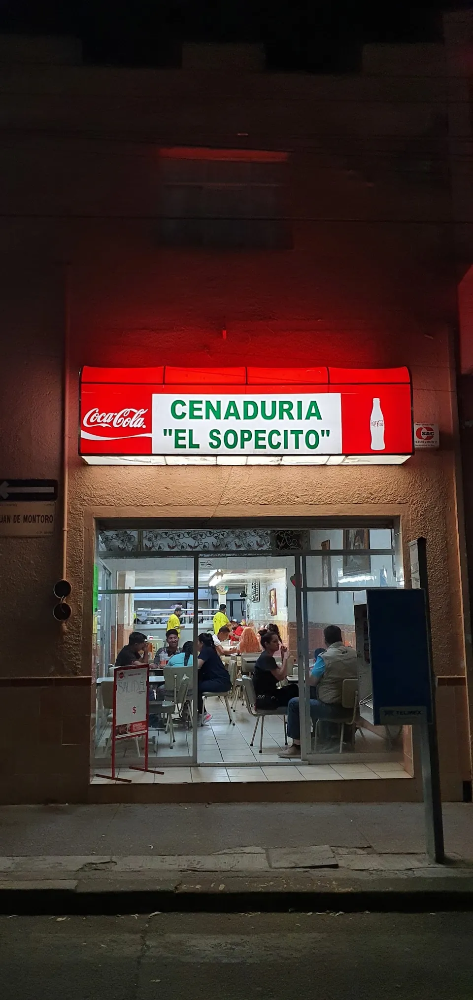
Cosío Sur 105 · Centro · Abre 19:00
Se enciende el letrero.Empieza la cena.
Enchiladas, flautas, tacos dorados y pozole, cada noche en el centro.
Lo que pides.Con precio.
Los tres de la casa, mismo precio
- Tacos dorados5 piezas
- Flautas4 piezas · deshebrada y pollo
- Enchiladas4 piezas · rojas o verdes · queso, cebolla o pollo
- Sencillos$40
- Con crema o guacamole$45
- Con cueros$50
- Con crema y guacamole$50
- Con 1/2 pata$65
- Con pieza de pollo (pechuga)$75
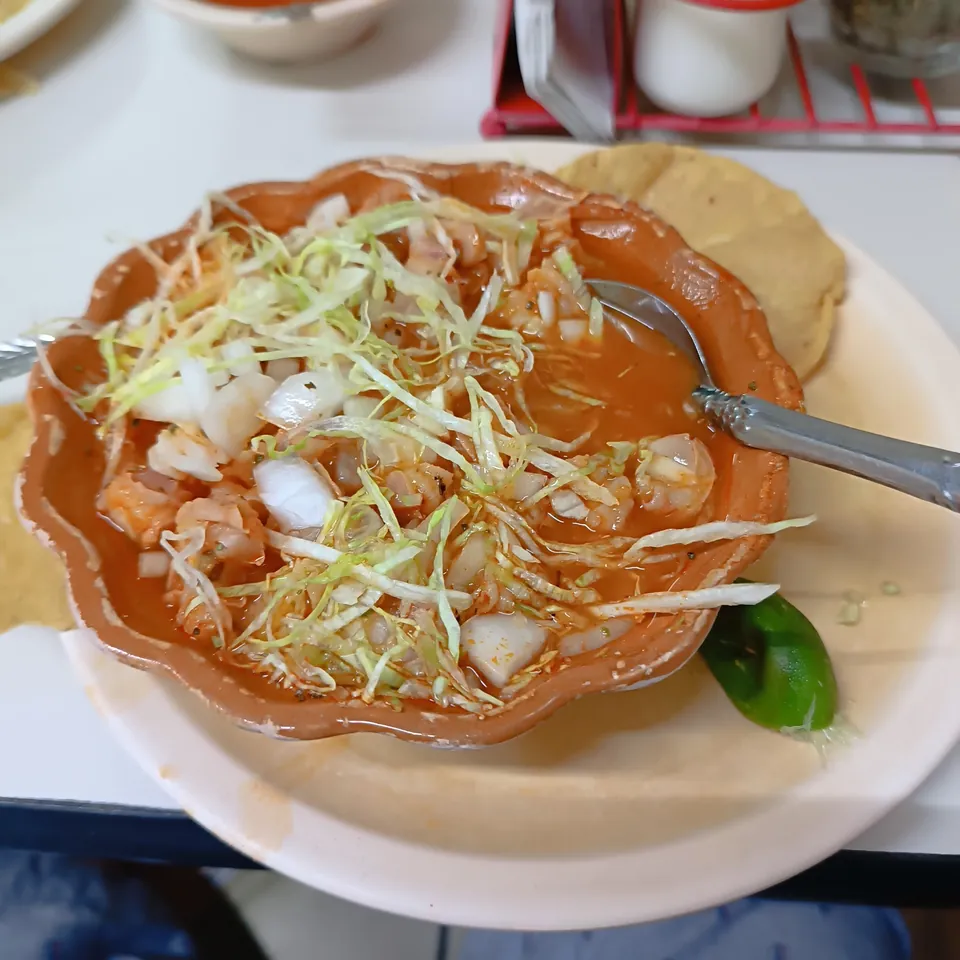
Pozole rojo
- Pregunta el precio
- Tostadas extras$5
También en la mesa
- Sopescueritos, lengua, deshebradaPregunta el precio
- Quesadilla de quesotortilla frita, crujientePregunta el precio
- Patas de pozolePregunta el precio
- Agua de horchataPregunta el precio
Arma tu cena.Ponla en la mesa.
Elige, ponlo en el mantel y cópialo o dícteselo por teléfono.
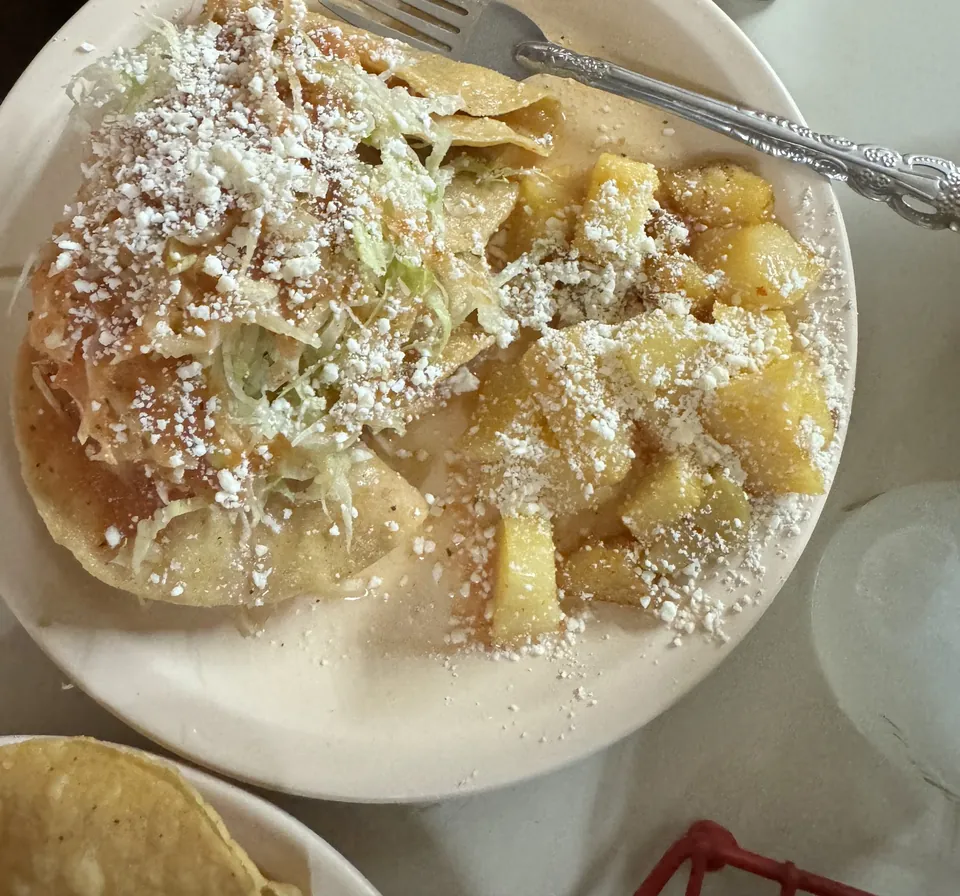
Enchiladas4 piezas · rojas o verdes · queso, cebolla o pollo
Tu mesa
La mesa está vacía.
CuentaElige arriba
Los precios son los de la carta. Lo que no tiene precio se pregunta por teléfono.
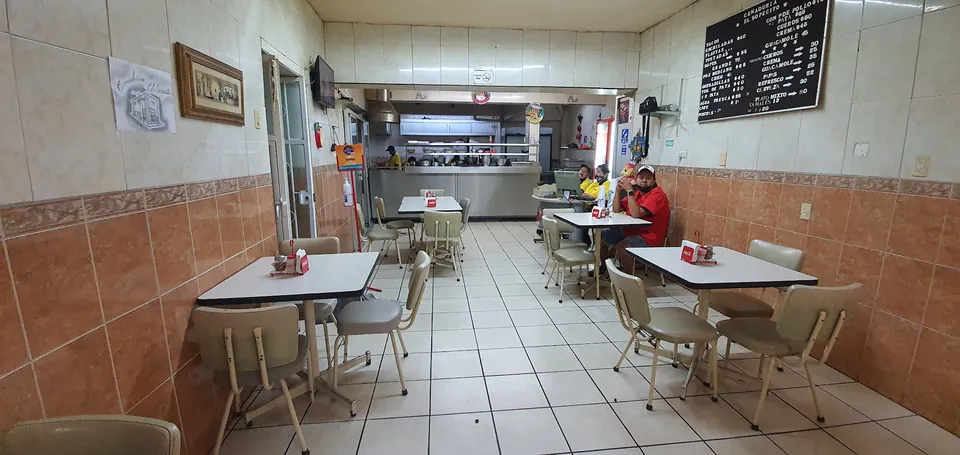
19:00
Se abre la puerta
y se prende el comal.
“Es regresar a los 80.”Alex Escamilla, Google
- Lunes a sábado
- 19:00 a 24:00
- Domingo
- 19:00 a 23:30
Así lo cuentanen la mesa.
4.1
1,580 opiniones en Google
“Muy rico todo!! En especial el pozole, los sopes suavecitos hechos al momento, si estás en Aguascalientes por el rumbo de la Purísima es obligatorio cenar aquí.”
“Una buen opción para cenar antojitos mexicanos. El lugar se sigue manteniendo como las típicas cenadurías de antaño […] Su especialidad los sopes, que cuentan con gran variedad.”
“It is so delicious. This is the most typical Mexican food […] I really love to eat here with my family.”
“Good variety food at very reasonable price”
“AMAZING food and good service”
“Great food i so recommend it!!!”
“Great place to dinner.”
Fotos dequienes cenan aquí.
Subidas por clientes a la ficha de Google.
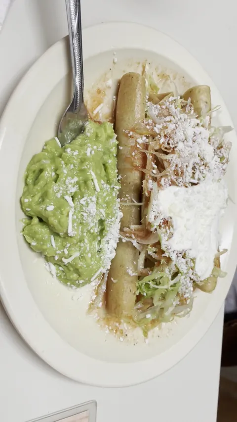
Flautas con guacamole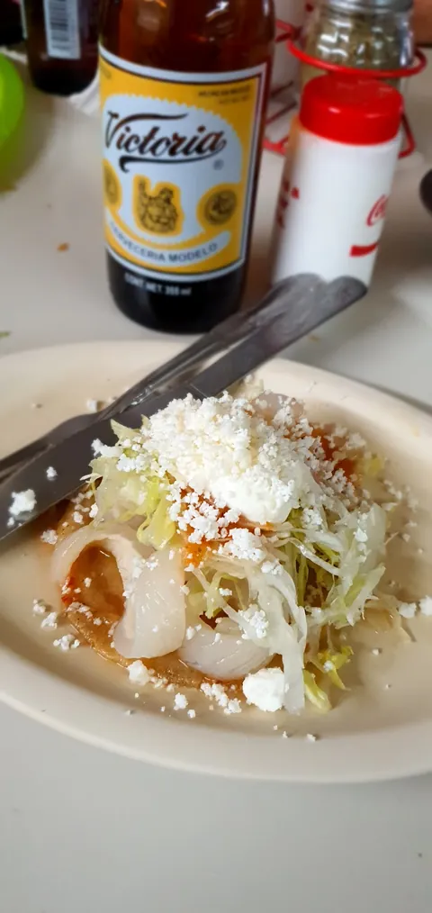
Enchiladas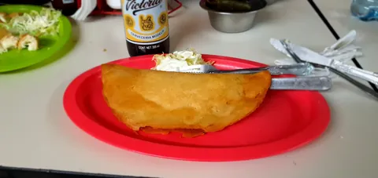
Quesadilla frita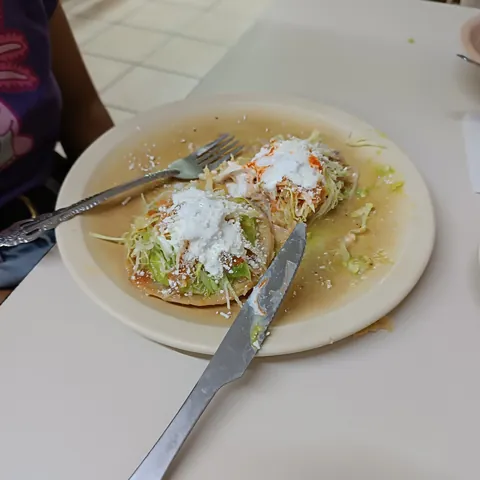
Sopes suavecitos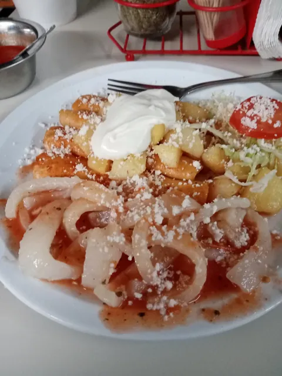
Enchiladas de cebolla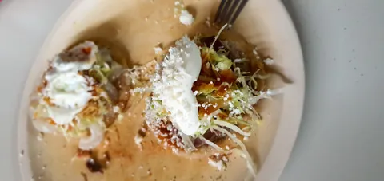
Sopes con crema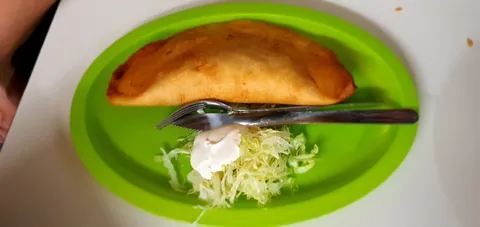
Quesadilla de queso
Cosío Sur 105.Busca el letrero rojo.
20000 Aguascalientes, Ags.
- Lunes19:00 a 24:00
- Martes19:00 a 24:00
- Miércoles19:00 a 24:00
- Jueves19:00 a 24:00
- Viernes19:00 a 24:00
- Sábado19:00 a 24:00
- Domingo19:00 a 23:30
Todo listopara completar.
- El WhatsApp de la cenaduría, si lo quieren publicar.
- La carta completa: sopes, bebidas y los precios del pozole.
- Su logo y el letrero en digital.
- Fotos propias del comedor y de la cocina.
Pásanoslo por el mismo chat donde te llegó esta muestra.